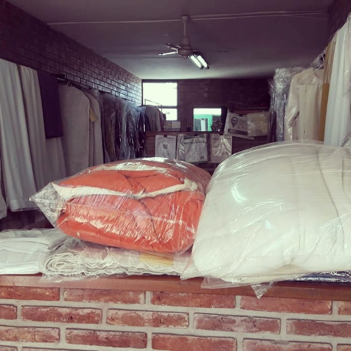
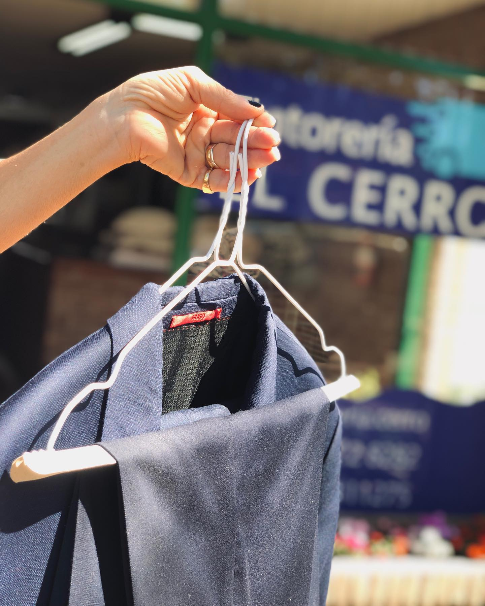
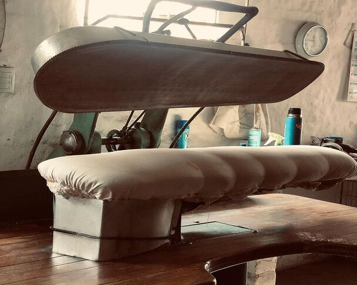
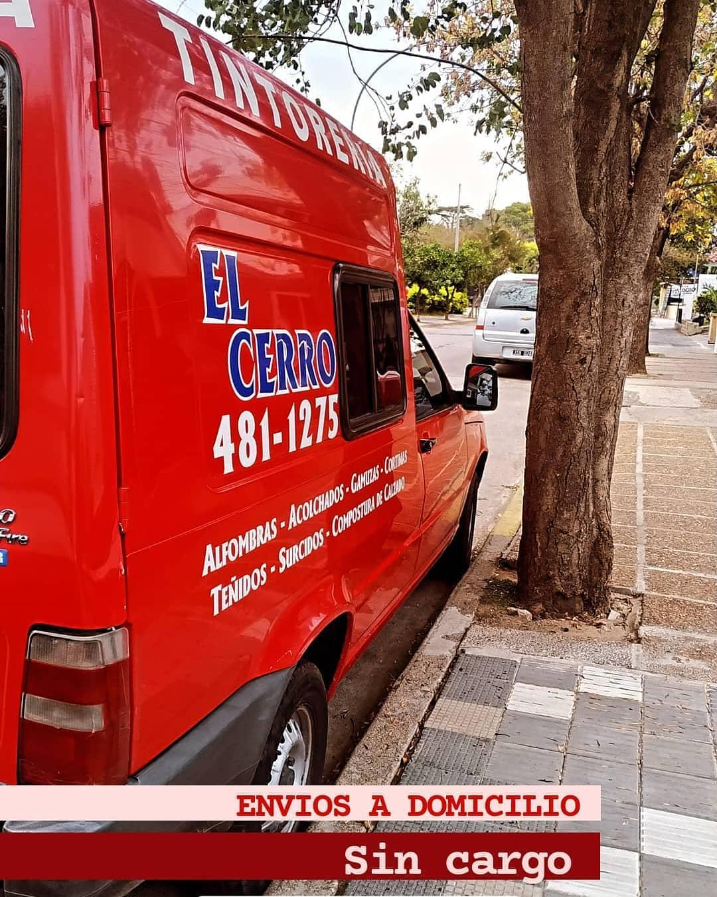

Estos son nuestros servicios
¡Trae tu ropa!
Podes traer la ropa en el estado que se encuentre. Nosotros nos encargamos!
¡La limpiamos!
Gracias a nuestros procesos tradicionales de lavado, tu ropa quedará como nueva!
¡Te la llevamos!
Una vez lavada, planchada y doblada la ropa, te la llevamos a tu casa sin cargo!
Lavandería
Limpieza en Seco: La máquina en seco es la encargada de limpiar todas las prendas que necesiten este tipo de limpieza y cuenta con un control de fugas. Es de circuito cerrado (evita la contaminación medioambiental). Tiene filtros ecológicos de carbón activado, solvente refrigerado que evita la dispersión del disolvente. Con ello no se dañan las prendas delicadas. Cuenta, asimismo, con un control de secado automático que evita, a su vez, el olor a químicos. La máquina en seco tiene programación por ordenador para cada tipo de género/tejido y los detergentes empleados son biodegradables. Lavado en Agua: La lavadora garantiza un lavado profesional especialmente importante en prendas delicadas cuya limpieza requiera de un lavado acuoso, tras haber sido anteriormente desmanchadas. Para ello, nuestra lavadora con un innovador programa de Wet-Cleaning utiliza detergentes que complementan, si fuese necesario, el desmanchado inicial.
Tintorería
Tintorería El Cerro es un establecimiento especializado en el cuidado y mantenimiento textil. Nuestras instalaciones están preparadas para limpiar, planchar y mantener las prendas.Nos podemos encargar también de teñir prendas de ropa. Nuestro objetivo principal es restaurar las prendas de vestir a un estado lo más próximo posible al que tenían cuando eran nuevas.
Planchado
El planchado: Se efectúa con dos técnicas diferentes dependiendo de la prenda de que se trate. Para chaquetas, jerséis, abrigos y en general todas las prendas exteriores superiores, se utiliza el maniquí, que permite recuperar la forma original sin dañar la fibra. Las características de nuestro maniquí se basan en la utilización de vapor seco para eliminar arrugas y facilitar el proceso de planchado posterior. Recientemente se ha incorporado al maniquí una plancha de doble vía que ahorra energía y permite un mejor acabado final. Otro tipo de prendas, como los pantalones o las faldas por ejemplo, necesitan un planchado manual, el cual se realiza en la mesa de planchado (con aspirado y soplado de las prendas). Una plancha dotada de suela de teflón que evita los brillos, y de control electrónico del vapor que evita manchas de agua, completan el proceso, en el que se incorporan antioxidantes para el planchado de cremalleras.
Entrega
Retiro y Entrega: Recogemos tu ropa y te la devolvemos lavada, planchada o de tintorería cuando y donde quieras. También disponemos de servicio en la tienda si prefieres traerla tú mismo.
¡Tenemos estas perfuminas!
podras llevartelas con tu lavado
Estas empresas confian en nosotros